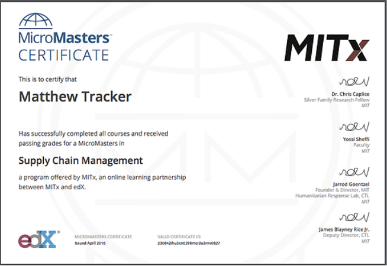
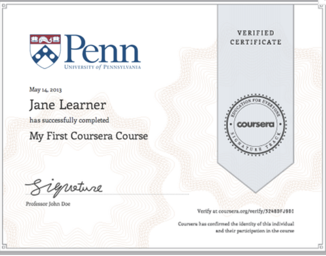

Issue #11 - Check and update biblio
1. Introduction
1.1. Goals
-
Issue a set of representative educational credentials as a Verifiable Credentials, in a forward-looking manner (details below)
-
If possible, generalize guidance for a range of Verifiable Credential pilots in other sectors
1.2. Problem Statement
Many Verifiable Credentials pilots in the education space are having to invent their own schemas, despite the wealth of previous art in the educational data standards communities. That is for multiple reasons:
-
The focus of the VC community has been very much on the “envelope” and not the contents
-
Educational data standards are not easily approachable in a general way to outsiders: where does one start depending on use case? locale?
-
Educational data standards have rich domain-specific vocabularies, taxonomies, and ontologies, but may have additional assumptions that data has been exchanged between trusted authorities (directly from issuer/clearing house to relying party), and therefore are not clearly adaptable to minimized/selective disclosure schemes.
The [LER-WRAPPER] effort has bootstrapped the alignment of existing educational data standards via the LER/VC wrapper. This enables technology providers to build interoperable tooling at the wrapper/envelope level, staying agnostic to the contents, while enabling discoverability of metadata. This effort attempts to extend upon those efforts, enabling interoperability/mapping at the content level via enriched linked data.
This effort attempts to bridge the VC ecosystem to the robust work already done in the educational data standards space, to enable reuse of the great work done by experts in the space. Our main goal is discoverability of educational data standards frameworks, and informing implementors of how to use these in VCs.
Our work will help inform VC-EDU pilots, but will be forwarded as recommendations to relevant educational data standards bodies, representatives of which are active in this group. Educational data standards bodies rely on validation through real world use, which the umbrella of the W3C-CCG can provide.
Lastly, this will attempt to address design challenges related to standards relying on the XML serialization format, which is not currently a supported serialization format in the VC data model, but is still needed for legal compliance for example in eIDAS legal signatures.
1.3. Requirements & Scope
1.3.1. Requirements
-
We are targeting the Verifiable Credential data model
-
This assumes use of linked data (e.g. RDF/JSON-LD)
-
Specifically, we assume critical data fields (e.g. see Example 1) must use structured, machine readable content, but additional presentations may be included (e.g. machine-readable plus PDF for human readable/backcompat)
-
Support display integrity for scenarios where a human is in the loop performing additional verification.
-
International-aware: do not restrict to US edu data standards
1.3.2. Out of Scope
-
Deeper/structural changes such as degree audits, learning pathways, or actual standardization prior to implementation.
-
VC-EDU can only release draft recommendations, but the standardization work needs to happen in the proper SDO; e.g. IEEE CM4LTS (for ILR recommendations), IMS Global (for Open Badges recommendations), etc. We will coordinate with the proper SDOs to do that work
1.4. Concepts Requiring Definition in an Educational Context
Note: To avoid confusion with how these concepts are represented by different standards/schema, we currently use placeholders for each concept. The names in brackets represent the current draft name for the concept.
-
Concept 1 (activity): describes an activity a person has undertaken. Examples of this might include performed Beethoven’s 6th symphony, completed a MOOC, attended a conference or webinar, spent six years working as a lion tamer
-
Concept 2 (skill): describes a learning outcome and/or skill a person has as a result of participating in a learning activity. Examples of this might include piano playing, advanced woodworking, work in accordance with established sustainability practices
-
Concept 3 (diploma): describes an outcome of a (formal) assessment process. Examples of this include: Bachelor in Sociology, Microsoft Certification, Member of the Bar Certificate
-
Concept 4 (enrolment): describes a person’s current enrolment in an educational organisation or participation/membership in an educational activity. The concept includes a description of the ROLE and the ACTIVITY/ORGANISATION. Examples include: student of University of Wine Country, Apprentice Lawyer with the California bar association, Teacher at Grade 5 Elementary School, Mentor for rocket building within ACME inc.
1.4.1. Relation between Concepts
All of these concepts can be related to one another. Thus Concept 3 can include the acquisition of Concept 2, as a result of completing Concept 1, while being Concept 4.1.4.2. Approach to Definition
Each of these concepts can be defined using the following concepts:-
definition: this is a link to a URI describing the concept and to the target framework of the concept
-
instance: this describes data about the person’s individual performance of that concept
In pseudocode, this is structured as:
credentialSubject:
// properties specific to the learner, e.g.:
- learner’s did
- name
// property representing relationship of subject to "concept" (skill/credential/...)
- hasConcept:
// properties specific to concept "definition", e.g
- framework / identifier / uri (may be encoded in "type" and "id")
- name
- description
instance:
// properties specific to concept "instance" e.g.:
- dateperformed
- grade
1.5. Related Work
-
Open Badge as VC. Example, updated from Nate and Kim’s RWOT6 paper [OBS-ARE-VCS]
-
LER wrapper
-
Pilots/examples will evolve on T3 LER Hub - [LERHUB]
-
Schema.org terms/types?
-
schema:Person is an obvious one for learner
-
ob:Profile is a generic profile class based on schema.org terms that can represent either learners or organizations.
-
CEDS
-
CTDL and Credential Engine **(note “credential” terminology issue**)
-
[CREDREG]: RDF-based schema for describing credentials and skills
-
Examples of open badge and CLR references to CTDL: [CREDREG-ILWRGUIDE].
-
Credential Finder: [CREDFINDER]
-
-
Controlled vocabularies used in Europe published as linked open data:
-
Particularly useful is that [ISCED-F] (thematic areas of UNESCO’s international classification of education)
2. Appendix
2.1. Example 1: Course/Program Certificate
2.1.1. Examples from the Wild
|
 |
 |
2.1.2. Extracted Fields
| Field | Ex 1 Values | Ex 2 Values |
| Accomplishment Type | MicroMasters Certificate | Verified Certificate |
| Learner Name | Matthew Tracker | Jane Learner |
| Achievement | Supply Chain Management | My First Coursera Course |
| Issued Date | April 2016 | May 14, 2013 |
| Certificate ID | 230842h...0827 | <verification link?> |
| ??? Issuer | EdX | Coursera |
| Course Provider | MITx | U Penn |
| Other | <signatories>??? |
2.1.3. Approaches
2.1.3.1. Approach 1: ILR/LER Wrapper with Open Badges JSON-LD serialization + PDF and linked competency definitions
EXAMPLE showing 1 record expressed in 2 different formats (JSON-LD and PDF) in the payload. Using the OpenBadges serialization for the JSON-LD and with links to a credential defined in credentialengineregistry.org and competencies from the casenetwork.imsglobal.org.
{ "@context" : [ "https://www.w3.org/2018/credentials/v1" , "http://www.legreq.com/t3/learner-record/v1" , "https://w3c-ccg.github.io/vc-ed/contexts/v1/context.json" ], "id" : "did:example:ebfeb1f712ebc6f1c276e12ec21" , "type" : [ "VerifiableCredential" , "LearnerRecordWrapper" ], "issuerId" : "did:example:ebfeb1f712ebc6f1c276e12ec22" , "date" : "2010-01-01T19:73:24Z" , "name" : "MicroMasters Certificate" , "description" : "This record authenticates that EdX MITx has conferred the MicroMasters Certificate to Matthew Tracker." , "learnerRecord" : [ { "POCid" : "did:example:ebfeb1f712ebc6f1c276e12ec23" , "payload" : { "type" : "AlumniJsonLd-3.0" , "format" : "application/ld+json" , "data" : { "type" : "Assertion" , "id" : "https://example.org/matthew-tracker-supply-chain-management-badge.json" , "recipient" : { "type" : "email" , "hashed" : true , "salt" : "deadsea" , "identity" : "sha256$c7ef86405ba71b85acd8e2e95166c4b111448089f2e1599f42fe1bba46e865c5" }, "evidence" : "https://example.org/matthew-tracker-supply-chain-management-work.html" , "issuedOn" : "2016-12-31T23:59:59Z" , "expires" : "2017-06-30T23:59:59Z" , "badge" : "https://raw.githubusercontent.com/w3c-ccg/vc-ed/gh-pages/samples/definitions/supplyChainManagementCertificate.json" } } }, { "POCid" : "did:example:ebfeb1f712ebc6f1c276e12ec23" , "payload" : { "format" : "application/pdf" , "data" : "H4sICMr5oF4CA2Zha2VfY2VydC5wZGYA7L0H3CxJWS6uIEgQAQmCi[...]" } } ] }
2.1.4. Approach 2: Open Badge as Verifiable Credentials
Notes:
-
The issuer asserts that a learner (identified with a DID) "holds" or "hasCredential" a particular defined achievement (here, an Open Badges BadgeClass)
-
The defined achievement that is asserted is described inline, though most BadgeClasses are also available to be retrieved in their latest updated form at their identifying "id" IRI when that IRI uses the http/https scheme.
{ "@context" : [ "https://www.w3.org/2018/credentials/v1" , "https://w3c-ccg.github.io/vc-ed/contexts/v1/context.json" , "https://w3id.org/openbadges/v2" ], "id" : "https://example.com/assertions/1001" , "type" : [ "VerifiableCredential" , "Assertion" ], "issuer" : { "id" : "did:web:edx.com" }, "issuanceDate" : "2020-03-10T04:24:12.164Z" , "credentialSubject" : { "id" : "did:web:matthew's_did" , "schema:hasCredential" : { "id" : "https://example.com/badgeclasses/123" , "type" : "BadgeClass" , "name" : "EdX MITx Supply Chain Management MicroMasters Badge" , "image" : "data:image/png;base64,..." , "description" : "Awarded on completion of EdX MITx Supply Chain Management MicroMasters program" , "criteria" : { "narrative" : "To earn this badge, the student must complete all coursework and assessment criteria for the EdX MITx Supply Chain Management MicroMasters Program" }, "issuer" : "did:web:edx.com" } } }
A second expression of similar JSON that uses only existing credentials and openbadges contexts (Not a final approach)
{ "@context" : [ "https://www.w3.org/2018/credentials/v1" , "https://w3id.org/openbadges/v2" ], "id" : "https://example.com/assertions/1001" , "type" : [ "VerifiableCredential" , "Assertion" ], "cred:issuer" : { "id" : "did:web:edx.com" }, "issuanceDate" : "2020-03-10T04:24:12.164Z" , "issuedOn" : "2020-03-10T04:24:12.164Z" , "recipient" : { "type" : "email" , "identity" : "alice@example.com" }, "credentialSubject" : { "id" : "id:web:recipient.example.com" , "schema:hasAchieved" : { "id" : "https://example.com/badgeclasses/123" , "type" : "BadgeClass" , "name" : "Robotics Badge" , "image" : "data:image/png;base64,..." , "description" : "Awarded to people who have built a robot" , "criteria" : { "narrative" : "Build a Robot and post a picture of it" }, "issuer" : "https://example.com/issuer" } }, "badge" : "https://example.com/badgeclasses/123" , "proof" : { "type" : "PROOF-Type" , "created" : "DATE OF SIGNING" , "proofPurpose" : "assertionMethod" , "verificationMethod" : "ISSUER-SIGNING-KEY-DID-LINK" , "jws" : "SIGNATURE" }, "verification" : { "type" : "hosted" } }
2.2. Example 2: Diploma
Comments/Questions:
-
Diplomas may be expressed with the same approaches as shown in Example 1, because Open Badges is already used to issue diplomas.
-
Are there any other target formats we should include? E.g. via Europass efforts?
-
Any additional alignment frameworks we should include?
2.3. Example 3: Transcript
2.3.1. Options
Which standard would we like to start with?
| Standard | GEO |
| PESC+XML High School | Adoption in US/Canada; interest abroad |
| PESC+XML College Transcript standard | Adoption in US/Canada; interest abroad |
| EDI based standard governed by ANSI in fairly wide use handled by a system called SPEEDE | ?? |
| ELMO | Europe |
2.3.2. Implementation Options
-
LER Wrapper is an option; note that it includes XML as a string: [LER-WRAPPER-XML]
-
Improving on XML-as-string would be a bit of work. I see 2 paths:
-
Push to support XML as VC format
-
This would be helpful in the near-term, and would benefit other XML-based standards
-
-
Map PESC to JSON-LD
-
Work has started in a PESC JSON-LD Task Force: [PESC-JSONLD]
-
The VC-EDU community can help push this forward
-
-
2.4. Example 4: EDCI
Related links/examples:
-
XML example: [EDCI-CRED-XML-SAMPLE]
-
JSON/LD (LER) example: See example E6 EUROPASS in the [[LER-WRAPPER]
Comments/Questions:
-
This will have the same problem as in Example 3: they are currently using XML (as required for legally binding signatures), but the VC data model only describes JSON/JSON-LD formats.
-
A Europass EDCI in JSON-LD example: [EDCI-CRED-JSONLD-SAMPLE] (related to Level 6 EQF)
2.5. Example 5: Open Skills Assertion of ceasn:Competency
In this example, an issuer who is not necessarily the same as the definer of the competency asserts achievement of a competency or learning goal directly. This could enable direct match-up against a requirement on a job profile or learning pathway. Self-assertion of competency is also supported. There is no "BadgeClass"/"DefinedAchievement" intermediary class that must be defined in order to set out a specific learning opportunity, criteria, or authorized assessing body in order to make this claim.
Note:
-
The “ceasn:” prefix/namespace comes from here: [CTDLASN]
-
ceasn:Competency is defined here: CTDL ASN §Competency
{ "@context" :[ "https://www.w3.org/2018/credentials/v1" , "https://credreg.net/ctdlasn/schema/context/json" , "https://w3c-ccg.github.io/vc-ed/contexts/v1/context.json" ], "id" : "https://example.com/assertions/1001" , "type" :[ "VerifiableCredential" , "Assertion" ], "issuer" :{ "id" : "did:web:the_issuer_did" }, "issuanceDate" : "2020-03-10T04:24:12.168Z" , "credentialSubject" :{ "id" : "https://example.com/profiles/bob" , "schema:hasPerformed" :{ "id" : "https://credentialengineregistry.org/resources/ce-5d4e4f72-9e96-4ab4-a1d1-d82d518d8eb4" , "type" : "ceasn:Competency" , "competencyText" : "Demonstrate critical and creative thinking." } } }
2.6. Example 6: EMREX
EMREX is a network for exchanging assessments/results of education at any level.
The owner of the result (student or former student) gets access to trusted sources of these data (diploma registries, student information systems,...) and can share data with a third party. This third party could be an employer as part of a recruitment process, a university when applying for admission or others.
The technical set up of EMREX is described here:
EMREX is using a XML-format called ELMO, which is based on standard data models for Learning opportunities. The basis for the data exchange is structured data representing the results the result owner wants to share, but ELMO can also hold additional documents like a signed pdf of a Diploma.
Comments/Questions:
-
This will have the same problem as in Example 3 and 4: they are currently using XML (as required for legally binding signatures), but the VC data model only describes JSON/JSON-LD formats.
2.7. Example 7: Using a credential definition that exists in Credential Engine
{ "@context" : [ "https://www.w3.org/2018/credentials/v1" , "https://credreg.net/ctdlasn/schema/context/json" , "https://w3c-ccg.github.io/vc-ed/contexts/v1/context.json" ], "id" : "https://example.com/assertions/1001" , "type" : [ "VerifiableCredential" , "Assertion" ], "issuer" : { "id" : "did:web:the_issuer_did" }, "issuanceDate" : "2020-03-10T04:24:12.164Z" , "credentialSubject" : { "id" : "https://example.com/profiles/bob" , "schema:hasCredential" : { "id" : "https://credentialengineregistry.org/resources/ce-e7be83f4-687b-4439-a0eb-7c594086438a" , "type" : "ceterms:Credential" , "name" : "B.A. in Natural Science and Mathematics" , "description" : "The Bachelor of Arts in Natural Science and Mathematics is designed for students who are interested in the flexibility and diversity of a liberal arts degree and the opportunity to pursue a more extensive study in natural science and mathematics. This flexible degree allows you a wide range of options, including the opportunity to develop one or more minors." } } }
2.8. Example 8: Use of EducationalOccupationalCredential (schema.org)
About this example:
-
Uses [EOCRED]
-
This uses the schema.org term hasCredential as the claim type.
-
This takes advantage of other schema.org types, including mapping credentialSubject to Person
{ "@context" : [ "https://www.w3.org/2018/credentials/v1" , "https://w3c-ccg.github.io/vc-ed/contexts/v1/context.json" ], "id" : "https://example.com/assertions/1001" , "type" : [ "VerifiableCredential" , "Assertion" ], "issuer" : { "id" : "did:web:the_issuer_did" }, "issuanceDate" : "2020-03-10T04:24:12.164Z" , "credentialSubject" : { "type" : "Person" , "id" : "did:web:the_issuer_did" , "name" : "Sample Learner" , "schema:hasCredential" : { "id" : "https://hnc-path-to-facilities-management-definition" , "type" : "EducationalOccupationalCredential" , "name" : "HNC Facilities Management" , "description" : "Higher National qualifications provide practical skills and theoretical knowledge that meet the needs of employers. The HNC in Facilities Management (SCQF level 7) develops knowledge and skills of the modern Facilities Management industry including both 'hard' and 'soft' services, and is aimed at those in supervisory and management roles or aspiring managers within the wider realm of Facilities Services." } } }